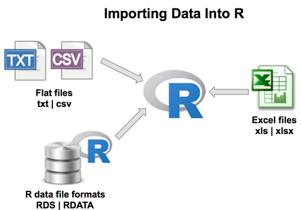

Appendix B — Basic Import/Export
When loading data into R, the choice of method matters, especially for tabular data like CSV files. There are three common approaches:
base R’s
read.csv()the
data.tablepackage withfread()
the readr package with functions like read_csv()
The performance gains of data.table and readr become significant as data size grows, especially for datasets with many rows. For files larger than 100 MB, fread() and read_csv() are about five times faster than read.csv(). However, the choice should consider memory usage, as very large datasets may impact it.
Keep in mind that data.table and readr are separate packages, requiring installation and loading.
readr functions
| Function | Description |
|---|---|
read_csv() |
CSV file format |
read_tsv() |
TSV (Tab-Separated Values) file format |
read_delim() |
User-specified delimited files |
read_fwf() |
Fixed-width files |
read_table() |
Whitespace-separated files |
read_log() |
Web log files |
readxl::read_excel() |
Read Excel files |
B.1 Export
Each of these packages and functions has the inverse “write” function to produce files in a variety of formats from R objects.
B.2 R data files
R has binary file formats for easy saving and loading of data, .Rdata and RDS:
.Rdata file is a binary file format in R used to save the entire workspace, which includes objects, functions, data frames, and more. It captures the current R session’s state, allowing you to save and load the entire workspace, including all objects, in a single file.
# Create some sample data
my_data <- data.frame(
ID = 1:3,
Name = c("Alice", "Bob", "Charlie"),
Score = c(95, 87, 92)
)
# Save the entire workspace to an .Rdata file
save.image(file = "my_workspace.Rdata")
# Clear the current workspace
rm(list = ls())
# Load the entire workspace from the .Rdata file
load("my_workspace.Rdata")
# Access the loaded data
print(my_data).RDS file, or R Data Serialization file, is a binary file format in R used to save individual R objects. Unlike .Rdata, it is not meant to save the entire workspace but specific objects or data structures.
# Create some sample data
my_data <- data.frame(
ID = 1:3,
Name = c("Alice", "Bob", "Charlie"),
Score = c(95, 87, 92)
)
# Save the data frame to an .RDS file
saveRDS(my_data, file = "my_data.RDS")
# Clear the current workspace
rm(list = ls())
# Load the data frame from the .RDS file
loaded_data <- readRDS("my_data.RDS")
# Access the loaded data
print(loaded_data)Using these file formats can have several advantages:
Preservation of Data Types and Structure: .RDS files preserve the original data types and structure of R objects, including lists, data frames, functions and more.
Efficiency and Speed: Reading and writing data in the .RDS format is more efficient and faster than working with text-based formats like CSV.
Control Over Specific Objects: .RDS files allow you to save and load specific R objects or datasets, providing control and flexibility.
B.2.1 Objects that take a long time
If there are parts of your analysis that are time-consuming to execute, it’s an indication that it’s a suitable time to adopt a modular approach. This approach involves dividing your analysis into distinct phases, with each phase having its dedicated script and resulting outputs.
You can address this by isolating computationally intensive steps in separate scripts and saving the critical object to a file using saveRDS. Subsequently, you can create scripts for downstream tasks that reload the essential object with readRDS. Breaking down your analysis into logical steps with clear inputs and outputs is generally a sound practice.